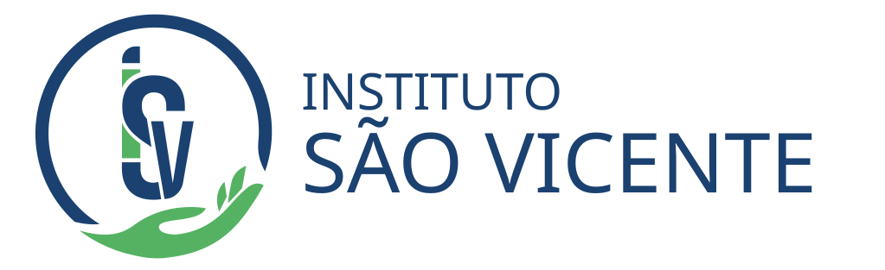

Ficha de visita técnica hospitalar — governança, estrutura, especialidades e recursos humanos.
AbrirFicha obstétrica — Rede Alyne, centro obstétrico, UTI neonatal, banco de leite e A-SEG.
AbrirUnidades de pronto atendimento — salas por porte, equipamentos, classificação de risco e indicadores.
AbrirServiço de atenção domiciliar — Melhor em Casa, EMAD/EMAP, coleta e fisioterapia domiciliar.
AbrirCentros de atenção psicossocial — RAPS, processos assistenciais, articulação em rede e indicadores.
AbrirCER — modalidades de reabilitação, equipe multiprofissional RCPD e processos assistenciais.
AbrirVE — sistemas de notificação, SINAN, PNI, investigação epidemiológica e sala de situação.
Abrir